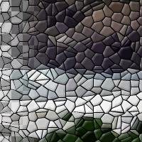

Mosaic
Mosaic is a filter which transforms an image into what appears to be a mosaic, composed of small primitives, each of constant color and of an approximate size.
Tile geometry
What shape to use for tiles
name: tile-type
type: enum
Tile size
Average diameter of each tile (in pixels)
name: tile-size
type: double
default: 15.00
minimum: 1.00
maximum: 1000.00
ui-minimum: 5.00
ui-maximum: 400.00
ui-gamma: 1.00
ui-step-small: 1.00
ui-step-big: 10.00
ui-digits: 2
unit:pixel-distance
Tile height
Apparent height of each tile (in pixels)
name: tile-height
type: double
default: 4.00
minimum: 1.00
maximum: 1000.00
ui-minimum: 1.00
ui-maximum: 20.00
ui-gamma: 1.00
ui-step-small: 0.01
ui-step-big: 1.00
ui-digits: 3
Tile neatness
Deviation from perfectly formed tiles
name: tile-neatness
type: double
default: 0.65
minimum: 0.00
maximum: 1.00
ui-minimum: 0.00
ui-maximum: 1.00
ui-gamma: 1.00
ui-step-small: 0.00
ui-step-big: 0.10
ui-digits: 3
Tile color variation
Magnitude of random color variations
name: color-variation
type: double
default: 0.20
minimum: 0.00
maximum: 1.00
ui-minimum: 0.00
ui-maximum: 1.00
ui-gamma: 1.00
ui-step-small: 0.00
ui-step-big: 0.10
ui-digits: 3
Color averaging
Tile color based on average of subsumed pixels
name: color-averaging
type: boolean
default: True
Rough tile surface
Surface characteristics
name: tile-surface
type: boolean
default: False
Allow splitting tiles
Allows splitting tiles at hard edges
name: tile-allow-split
type: boolean
default: True
Tile spacing
Inter-tile spacing (in pixels)
name: tile-spacing
type: double
default: 1.00
minimum: 0.00
maximum: 1000.00
ui-minimum: 0.50
ui-maximum: 30.00
ui-gamma: 1.00
ui-step-small: 0.01
ui-step-big: 1.00
ui-digits: 3
unit:pixel-distance
Joints color
name: joints-color
type: color
default: rgb(0.0000, 0.0000, 0.0000)
Light color
name: light-color
type: color
default: rgb(1.0000, 1.0000, 1.0000)
Light direction
Direction of light-source (in degrees)
name: light-dir
type: double
default: 135.00
minimum: 0.00
maximum: 360.00
ui-minimum: 0.00
ui-maximum: 360.00
ui-gamma: 1.00
ui-step-small: 1.00
ui-step-big: 15.00
ui-digits: 2
unit:degree
Antialiasing
Enables smoother tile output
name: antialiasing
type: boolean
default: True
Random seed
name: seed
type: seed
default: 0
minimum: 0
maximum: +inf
pads: input output
parent-class: GeglOperationAreaFilter
categories: artistic scramble
source: operations/common-gpl3+/mosaic.c
license: GPL3+
 This page is part of the online GEGL Documentation, GEGL is a data flow based image processing library/framework, made to fuel GIMPs high-bit depth non-destructive editing future.
This page is part of the online GEGL Documentation, GEGL is a data flow based image processing library/framework, made to fuel GIMPs high-bit depth non-destructive editing future.